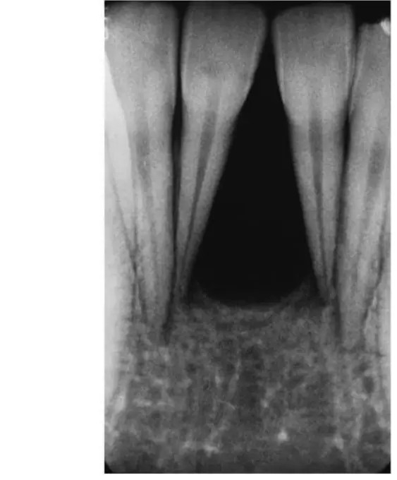
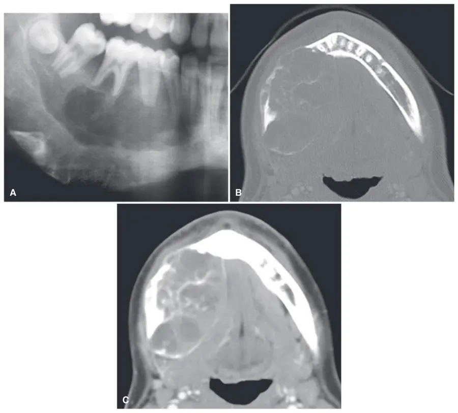

نسخه استخراجشده؛ ترجمه یا تأیید علمی انجام نشده است. وضعیت: captured
اول یک نکتهی نامگذاری که خودش توضیحدهنده است: چون منشأ این موجودیت هنوز مورد مناقشه است، نه «گرانولوما» نامیده میشود و نه «تومور»، بلکه «ضایعهی سلول ژانت مرکزی (CGC)». و یک واقعیت بافتشناسی که با نام نمیخواند: «برخلاف نامش، این ضایعات عمدتاً از فیبروبلاست با کانالهای عروقی متعدد ساخته شدهاند؛ سلولهای ژانت اقلیتی از جمعیت سلولیاند».

سن: عمدتاً نوجوانان و بزرگسالان جوان — دستکم ۶۰٪ موارد در افراد زیر ۲۰ سال. و یک نشانهی بالینی که از ماهیت پرعروقش میآید: مخاط روی ضایعه ممکن است رنگ بنفش داشته باشد.
و محل — با یک قاعدهی سنی جالب: مندیبل دو برابر ماگزیلا. و «در دو دههی نخست زندگی، اپیسنتر تمایل دارد مزیال به مولر اول مندیبل و مزیال به کانین ماگزیلا باشد» — یعنی در جوانها، ضایعهای قدامی.
و امضای داخلی CGC: در مندیبل خلفی، الگوی داخلی میتواند مینرالیزاسیون خطی، گرانولر و رشتهای (wispy) نشان دهد — و برخی از این استریشنها عمود بر حاشیه جهتگیری میکنند. این «ظرافت و گرانولر بودن»، آن را از سپتاهای درشت، منحنی و واضح آملوبلاستوما جدا میکند.
و یک الگوی رشد که نام مخصوص دارد — «جریانیافتن» (flow-around): در محیط ضایعه، حاشیه میتواند روی کورتکس باکال بومی بیفتد و از رویش عبور کند. و مرز استخوانی مندیبل متسع اغلب کیفیتی گرانولرتر از استخوان کورتیکال دارد، که دیدنش را دشوار میکند.
و اثر بر دندان: CGC اغلب دندانها را جابهجا و تحلیل میبرد؛ تحلیل ویژگی ثابتی نیست ولی وقتی رخ دهد میتواند عمیق و با کانتور نامنظم باشد. و لامینا دورای دندانهای درون ضایعه معمولاً از دست میرود.
و دو قاعدهی مدیریتی که باید حفظ کنی:
و درمان: تزریق کورتیکواستروئید داخلضایعهای و/یا کلسیتونین در ضایعات بزرگ، سپس انوکلیشن و کورتاژ؛ برخی رزکشن میشوند. عود نادر است ولی در ماگزیلا شایعتر.
کروبیسم بیماری ارثی نادری است از جهش جرملاین ژن SH3BP2 که در سیگنالینگ پاسخ ایمنی نقش دارد. و نکتهی کلیدی: ضایعاتش «از نظر بافتشناسی و رادیولوژیک با ضایعات CGC یکساناند».

سن و تظاهر: بین ۲ تا ۶ سالگی شروع میشود. شایعترین نشانه، تورم سفت، بدون درد و دوطرفهی گونههاست. تورم شدید ماگزیلا پلک پایین را میکشد و نواری از صلبیه را نمایان میکند و ظاهر «چشمان رو به آسمان» میسازد — همان چیزی که نام بیماری از آن آمده.
و مهمترین ویژگی پیشآگهیاش: کروبیسم بیماری محدود به زمان است — «ضایعات بدون درمان در حدود زمان بلوغ اسکلتی پسرفت میکنند». به همین دلیل درمان را میتوان به تعویق انداخت.
روی تصویر: ضایعات دوطرفه، با اپیسنتر همیشه در بدنهی خلفی و راموس مندیبل یا توبروزیتهی ماگزیلا. حاشیه واضح و کورتیکه. ساختار داخلی مانند CGC: استخوان ظریف و گرانولر با استریشنهای رشتهای.
و جهت جابهجایی دندانها — که پیشتر هم افتراق کروبیسم از سندرم گورلین را میساخت: «چون اپیسنتر این ضایعات در مندیبل و ماگزیلای خلفی است، دندانها به سمت خط وسط جابهجا میشوند.» و یک خطر جدی: «جابهجایی گستردهی بافت نرم مدیال مجاور مندیبل میتواند راه هوایی را به خطر بیندازد».
و افتراق از دیسپلازی فیبرو ساده است: دیسپلازی فیبرو یکطرفه است. و افتراق از کراتوسیستهای سندرم گورلین با تقارن دوطرفه، جابهجایی قدامی دندانها، و ظاهر مولتیلوکولار انجام میشود.
و کیست استخوانی آنوریسمال (ABC) — مدتها ضایعهای واکنشی در نظر گرفته میشد، ولی کشف یک ناهنجاری کروموزومی ژن USP6 به علتشناسی نئوپلاستیک اعتبار داده است. از تکثیر فیبروبلاستها و عروق کوچک، سلولهای شبهاستئوکلاست، و استخوان بافهای واکنشی و کمکلسیفیه ساخته شده است.
و سه معیار افتراقش از CGC — چون ظاهرشان میتواند یکسان باشد: ABC «به مراتب بیشتر استخوان را متسع میکند»، «شایعتر در نواحی خلفی مندیبل تا قدامی»، و از همه عملیتر: آسپیرهی خونی به نفع ABC است.
و درمان و عود: MDCT یا MRI برای تعیین گستره و توصیف ماهیت بسیار پرعروق ضایعه توصیه میشود. کورتاژ جراحی و رزکشن نسبی روش اصلیاند، و نرخ عود ۱۹ تا ۵۰٪ پس از کورتاژ و حدود ۱۱٪ پس از رزکشن است.